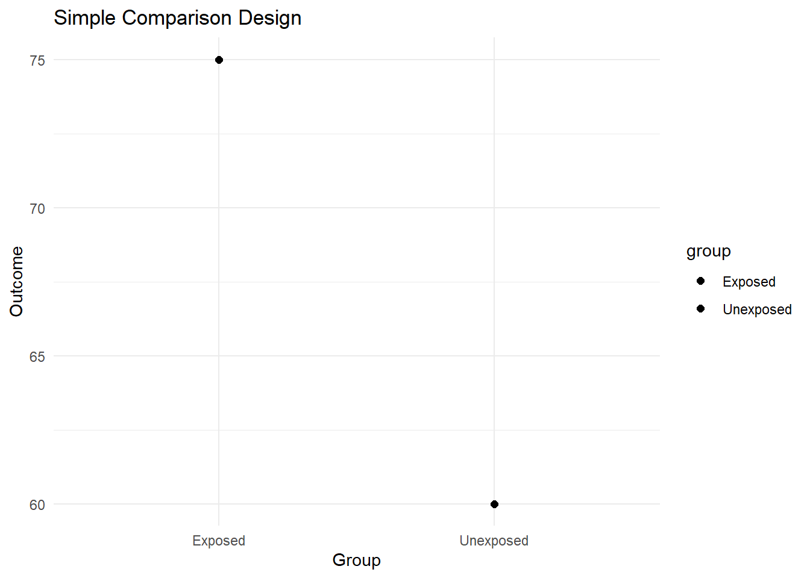
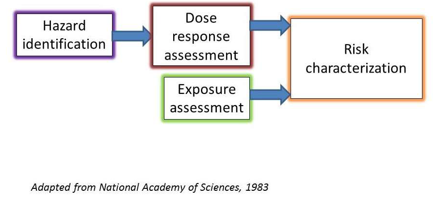
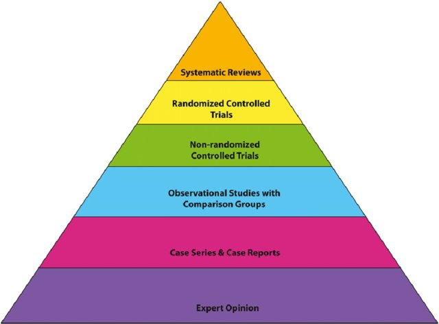
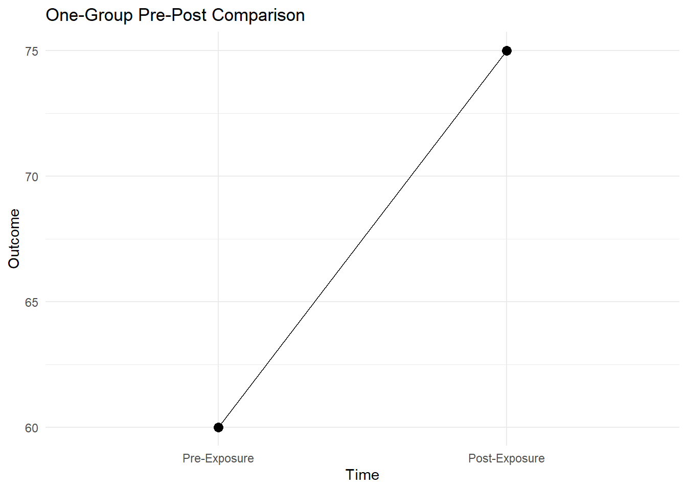
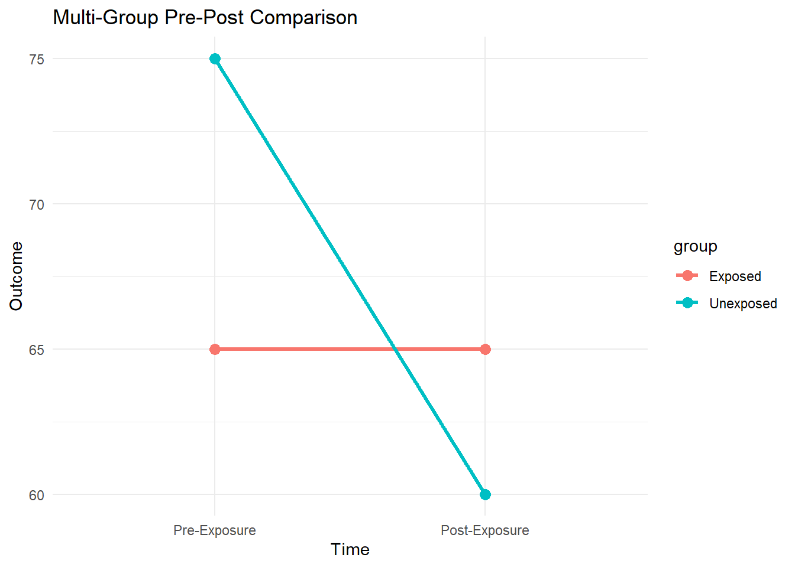

Hazard Identification
MVEN10 Risk Assessment in Environment and Public Health
Introduction
- Risk = Hazard * Exposure

Hazard Identification and Characterization
Different questions of interest:
Identification: YES/NO
Characterization: dose-response models
Validity: Hierarchy of Evidence

Opinion without evidence
NOT expert judgement; Not necessarily from experts
Strength: useful in the lack of empirical evidence
Weakness: low validity (not necessarily wrong!)
Case report & case series
Definition
Strength: simple in design and practice
Weakness: no account for bias; generalizability
Observational studies
Definition: observational vs interventional
Type: case control, cohort
Strength: generalizable within study groups; less bias from comparison
Weakness: no full account for bias
Controlled experiments (randomized and non-randomized)
Definition: direct intervention; group assignment
Strength: direct evaluation of impact of intervention to reduce bias
Weakness: time-consuming, expensive, ethical challenges
Systematic reviews
Strength: consider existing evidence for their results, validity and generalizability; adaptive
Weakness: complicated and affected by review methodology
Type: Lines of Empirical Evidence
Type: human, animal (in vivo), non-animal (in vitro, new-approach methodologies)
Human Experiments
Atrocities within sight:
during WWI, deliberate and pseudo-scientific experiments and torture on human by Japanese and German Nazi
Tuskegee Syphilis study (1932-1972) by US government, targeting African Americans
Why we don’t conduct human experiments
- Ethics: “Cannot deliberately expose humans to potentially harmful agents.”
Watch the videos on:
Declaration of Helsinki (1964) by the World Medical Association
The Belmont Report (1979) after the Tuskegee experiment
Mandate on Institutional Review Boards(US); Swedish Ethical Review Authority (Etikprövningsmyndigheten)
Potential harmful agents: observational evidence in human + controlled experiments in animal and non-animal systems
Beneficial agents: controlled trails, voluntary participation after complete transparency
Epidemiological studies
Definition: Observational studies on human
Design: prospective vs retrospective, sampling, extrapolation
Limitations in interpretation: results from epidemiological studies should only be interpreted as associations, not causations
Animal studies
Species: rodents (rats, mice), fish, earthworm, dogs, monkeys, etc.
Strength: free from human ethical concerns; precise controls; mechanistic insights
Weakness: intra-species difference
More toxic to animal than human: DDT (Silent Spring by Rachel Carson, 1962)
More toxic to human than animal: arsenic (WHO arsenic facts)
Acute animal dosing for chronic human exposure
Non-animal studies
Type: in vitro (cell/tissue cultures), in silico (computational modeling/simulations)
Example: physiologically-based artificial organ system, human cell genome analysis (omics), quantitative structure-activity relationship models
Strength: free of animal use (3R principles)- rapid, high-throughput, cost-effective, no ethical concerns
Weakness: still developing, limited acceptance in regulation and application
Discussion and Exercise
Separate into two groups and discussion the following questions (5 min):
considering the strength and weakness of each line of evidence, how they compliment each other.
fill in the following table: intersection between type and validity of evidence
| Evidence type | Case report & series | Observational studies | Controlled trails | Systematic Reviews |
|---|---|---|---|---|
| Human experiment | … | … | … | … |
| Epidemiological studies | … | … | … | … |
| Animal studies | … | … | … | … |
| Non-animal studies | … | … | … | … |
Causal inference
Central question: inference for causality
“Was the hazard caused by the agent of interest?”
“Will the intervention cause a reduction in the hazard?”
Correlation is NOT Causation
Our intuitive inference are based on correlation.
Example1: People who use more sunscreen also have higher rates of skin cancer
Example2: In the United States, the per capita crime rates are higher among people of brown and black skin color
Example3: Number of people drown increases when ice cream consumption increases
Highlights:
- Correlation does not imply a causal relationship.
- Lack of correlation does not imply a lack of causal relationship.
- There may be biases that explain the observed association.
Threats to validity in observational and non-randomized intervention studies
- Selection Bias: When individuals self-select into treatment groups, leading to systematic differences between groups.
- Example: People who opt for an exercise program may already be healthier than those who do not.
- Confounding: A third variable affects both the treatment and the outcome, leading to biased estimates.
- Example: A new teaching method might be adopted in schools that already have higher-performing students.
- Maturation: Changes in subjects occur naturally over time, not because of the treatment.
- Example: Children naturally improve in cognitive skills as they age, regardless of an educational intervention.
- History: External events occurring during the study may affect outcomes.
- Example: An economic crisis affecting income levels during a study of financial literacy interventions.
Observational designs
Simple Comparison
Easy to implement; Comparison at one time point only.
One-group pre-post comparison

Check for baseline difference
Multi-group pre-post comparisons

Bradford Hill considerations
By Austin Bradford Hill 1965, causal inference in epidemiological studies.
Nine considerations:
Strength
Consistency
Specificity
Temporality: the ONLY necessary condition for causality among the nine
Biological Gradient
Plausibility
Coherence
Experiment
Analogy
Hall, 2024. Austin Bradford Hill’s ‘Environment and disease: Association or causation’.Addition.
Hill’s considerations:
Not designed as a definitive criteria, thus should not be used as one
All Hill’s considerations satisifed without causality: ice cream consumption and drowning
Counterfacuals
Identification question: “Was the hazard caused by the agent of interest?”
Countefactual: “Would the same individual subject develop the same hazard, if anything else were the same, without exposure to the agent of interest?”
“Will hazard on the same subject be reduced, if anything else were the same, without the intervention?”
By comparing the treatment with the counterfactual, these threats are effectively controlled.
Counterfactuals cannot remove biases, but isolate the causal effect from biases.
Randomized Controlled trails as approximations to counterfactuals
Challenge to counterfactuals: Current human technology has no method to observe counterfactuals.
Approximation: randomized assignment into intervention and control groups
RCT question: “What would happen if everything is the same between groups except the intervention/exposed?”
Randomized controlled trails is the GOLD STANDARD of causal inference.
Directions to Advanced Causal Inference
Experimental design
What is the minimal sample size required for randomization?
What if we want to introduce magnitude of treatment into randomization?
What if the sample needs to be stratified to represent the population?
Empirical evaluation of observational evidence
Quasi-experimental methods (such as instrumental variable)
What assumption underlines these methods?
To what extent their conclusion could be generalized?
Questions?
Afternoon at 1-3pm at Biosfären (Sal 220)